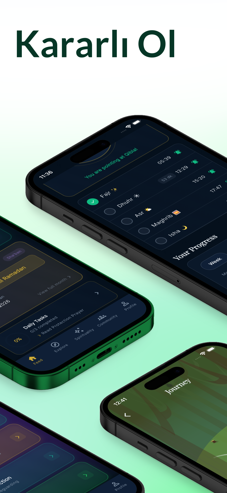
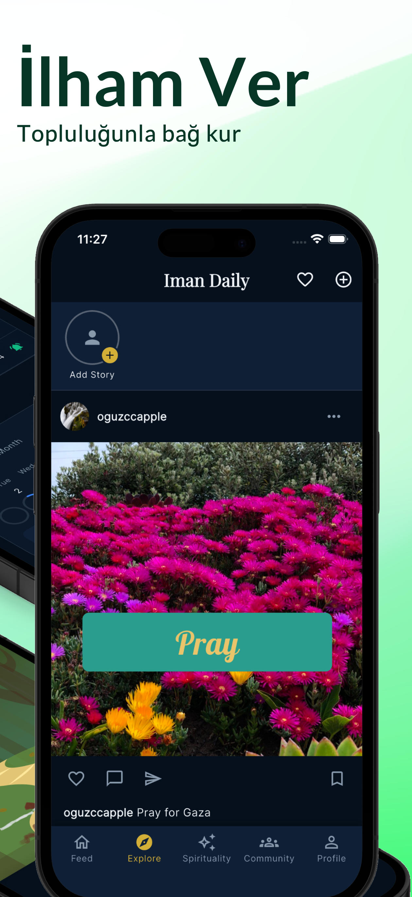
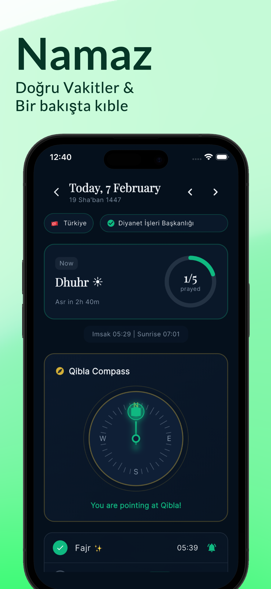
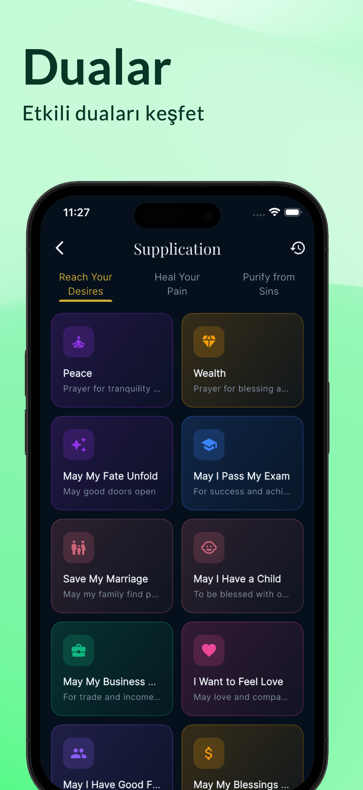

Takva
İbadet ve tefekkür
Ruhunun sığınağı
Meditasyon, namaz takibi, Kuran okuma ve anlamlı alışkanlıklar edinmek için manevi yol arkadaşınız — gelişiminize ilham veren bir toplulukla birlikte.


Uygulamadan kareler




Neler yapabilirsiniz
Meditasyon ve zikir
Rehberli meditasyon seansları ve birden fazla modu olan zikir sayacı. Huzur ve farkındalık bulun.
Namaz takibi
Günlük namazlarınızı ve manevi alışkanlıklarınızı takip edin. Hatırlatıcılar ve ilerleme bilgileriyle istikrarlı kalın.
Kuran ve dua
Kuran okuyun, tilavet dinleyin ve her durum için seçilmiş dua koleksiyonlarını keşfedin.
Kıble pusulası
Dünyanın her yerinde kıble yönünü bulun. Doğru, hızlı ve kullanımı kolay.
Topluluk
Hikâyeler paylaşın, arkadaşlarınızla bağlanın ve manevi yolculuğunuzda birbirinize ilham verin.
21 günlük yolculuklar
Rehberli 21 günlük programlarla kalıcı manevi alışkanlıklar edinin. Zincirinizi koruyun, motive kalın.